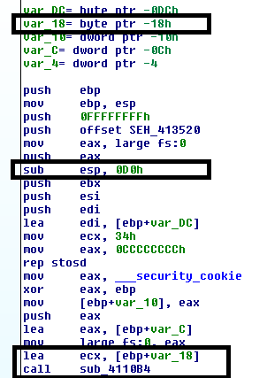
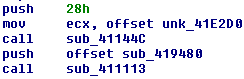

C++ And You
How C++ Works Under the Hood
Objectives
- Understand and Identify Run Time Type Information (RTTI), and its uses
- Understand and Identify C++ Class Layouts in memory
- Understand how Inheritance Affects C++ in-memory structure
- Understand the composition of C++ class memory functions and vtables
- Understand and Identify the effect of C++ Templates on generated code
Approaching C++
- Compiler-generated C++ tends to be complex
- Classes and inheritance create complex structures
- Member functions may lack direct calls of any kind
Functions in C++
- Function implementation in C++ can vary rather widely
- Overloading
- Templates
- Member Functions and Inheritance
- Also features differences in calling convention and implicit arguments
A Note on Name Mangling
- Name mangling in C++ tends to be much more complex than in C
Classes
- C++ Class structure can vary a bit based on composition
- Plain Old Data (POD) types tend to be roughly analagous to C
- Inherited classes and virtual methods can make class composition quite a bit more complex
Identifying Classes
- Member functions tend to make heavy use of ECX*, especially if it does not appear to have been initialized
- The this pointer (passed either via ECX or as the first argument to the function) is a pointer to the top of the current class object.
* NOTE: this is only true for Microsoft x86 - __thiscall on SYSTEM V and all x86_64 platforms simply pass the this pointer as an implicit first argument
Constructors
- Constructors may get called in different contexts depending on how the object they back is allocated
- Global objects get initialized during CRT startup (before main)
- If stack allocated, call to ctor will be preceded by sub esp, <sizeof(class)>
- If heap allocated, call to ctor will be preceded by a call to new()
- In all cases, there will be a mov into ECX
Constructors (cont'd)
Given this class:
class TestClass { private: uint32_t inner_; public: TestClass() : inner_(20) { } TestClass(uint32_t t) : inner_(t) {} ~TestClass() {} uint32_t get() const { return inner_; } void message(const std::string& val) { std::cout << val << std::endl; } }
Constructors: Dynamic
TestClass* t = nullptr; t = new TestClass(v)

Constructors: Stack
void func() { TestClass t; std::cout << "Value from func: " << t.get() << std::endl; }
Constructors: Stack
Constructors: Global
TestClass gTest(40); int main(int argc, char** argv) { std::cout << "Value from global: " << gTest.get() << std::endl; return 0; }
Destructors
- Compiler ensures they get called when an object is destroyed
- In a stack allocated object, the dtor will be called prior to stack frame collapse
- With heap allocated objects, the dtor will be called as part of the delete process, prior to the backing memory getting freed
- The dtor of global objects gets called during process cleanup, after "main" (or equivalent) returns.
Destructors (cont'd)
TestClass* t = nullptr; t = new TestClass(v); // ... delete t

Member Functions
TestClass* t = new TestClass(); t->get();
- Non-virtual member functions use the __thiscall calling convention (MS x86)
- The "this" pointer, which points to the top of object currently being operated on, is passed via ECX (or as the implicit first argument)
Static Methods
TestClass::message("Test");
- Generally, these follow somewhat more standard rules regarding calling convention
- No "this" pointer is passed to static methods
Thunks
- A small chunk of code that is called by a function, but will not return
- Instead it performs some small action, and jumps to a "real" function
- Target function will return to original calling code
- May be used to fix up calling conventions, implement closures, or, in some cases, manage virtual function selection (among other things)
Class Memory Layout
- Classes containing virtual member functions get an extra hidden structure member
- The vfptr (top of structure) points to the class's vtable, which contains pointers to virtual member functions.
*** Important Note: The given examples are x86 based, and NOT portable to x64 without changes ***
Class Layout: NormalClass
class NormalClass { private: uint32_t a_; public: NormalClass(uint32_t v) : a_(v) {} uint32_t get() const { return a_; } }
NormalClass -> size(4) ---------------------- 0x00: | a_
Class Layout: NormalClass
In action:
NormalClass n(20); std::cout << "Size: " << sizeof(NormalClass) << "\nFirst element: " << *((uint32_t*)&n) << std::endl;
Output:
Size: 4 First Element: 20
Class Layout: VirtualClass
class VirtualClass { private: uint32_t a_; public: virtual ~VirtualClass() {} VirtualClass(uint32_t v) : a_(v) {} virtual uint32_t get() const { return a_; } };
VirtualClass -> size(8) ----------------------- 0x00: | (vfptr) 0x04: | a_ VirtualClass Vtable ------------------- 0x00: | &VirtualClass::get
Class Layout: VirtualClass2
class VirtualClass2 { private: uint32_t b_; public: virtual ~VirtualClass2() {} VirtualClass2() : b_(20) {} virtual void stuff() {} virtual uint32_t getB() const { return b_; } };
VirtualClass2 -> size(8) ------------------------ 0x00: | (vfptr) 0x04: | b_ VirtualClass2 Vtable -------------------- 0x00: | &VirtualClass2::stuff 0x04: | &VirtualClass2::getB
Class Layout: InheritedClass
class InheritedClass : public VirtualClass, public VirtualClass2 { private: uint32_t c_; public: InheritedClass() : c_(10), VirtualClass(30) {} virtual void stuff() { MessageBoxA(nullptr, "Stuff", "Stuff", MB_OK); } };
InheritedClass -> size(20)
--------------------------
| [Base Class VirtualClass]
0x00: | VirtualClass::(vfptr)
0x04: | VirtualClass::a_
| [Base Class VirtualClass2]
0x08: | VirtualClass2::(vfptr)
0x0c: | VirtualClass2::b_
0x10: | c_Class Layout: InheritedClass (cont'd)
InheritedClass's VirtualClass Vtable ------------------------------------ 0x00: | &VirtualClass::get InheritedClass's VirtualClass2 Vtable ------------------------------------- 0x00: | &InheritedClass::stuff 0x04: | &VirtualClass2::getB
InheritedClass in Action
InheritedClass h; uint32_t a, b, c; a = *(((uint32_t*)&h)+1); // VirtualClass::a_ b = *(((uint32_t*)&h)+3); // VirtualClass2::b_ c = *(((uint32_t*)&h)+4); // InheritedClass::c_ std::cout << "Size: " << sizeof(h) << "\nA: " << a << "\nB: " << b << "\nC: " << c << std::endl;
Size: 20 A: 30 B: 20 C: 10
Inheritance and Virtual Functions
- Calling virtual member functions means first looking up the appropriate vtable entry
InheritedClass* h = new InheritedClass(); auto a = h->get();
Translates to:
mov eax, [ecx] ; vtable call [eax] ; first method
Inheritance and Virtual Functions
Similarly,
InheritedClass* h = new InheritedClass(); h->stuff();
Translates to:
lea eax, [ecx + 0x0c] ; Find the right vtable mov eax, [eax] ; Fetch function ptr call eax ; call
Templates
- Templated code will at least be copied once for each implementation type
- Often inlined
Run Time Type Information
- Structure information generated by the compiler to support some C++ operations:
- Exceptions
- dynamic_cast
- typeid
- type_info
- Typically only required for polymorphic classes (i.e., classes with virtual member functions)
RTTI (cont'd)
- Often results in string and type information being embedded in the binary
- Type descriptions tend to be compiler specific
References
- OpenRCE Article on Exception Handling and C++ Class composition by Igor Skochinsky - http://www.openrce.org/articles/full_view/21
- A bit dated now, but still somewhat relevent - C++ Under the Hood by Jan Gray - Archived at: http://www.openrce.org/articles/files/jangrayhood.pdf
- The Old New Thing article about member function pointers - https://blogs.msdn.microsoft.com/oldnewthing/20040209-00/?p=40713
- Sabanal/Yason (IBM) Presentation from Blackhat 2007 - Reversing C++ - https://www.blackhat.com/presentations/bh-dc-07/Sabanal_Yason/Paper/bh-dc-07-Sabanal_Yason-WP.pdf
- The C++ Standard - https://isocpp.org/std/the-standard (current);
Additional Topics
- Anti-debugging Techniques
- Many good references available
- Some techniques more obscure/harder to identify than others
Some good compendiums on the topic:
http://pferrie.host22.com/papers/antidebug.pdf http://www.openrce.org/reference_library/anti_reversing